Таблица коллекции |  Навигация по канону |  Связные экранизации |
Таблица коллекции | Навигация по канону | Связные экранизации |


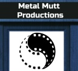

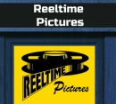

Wartime 20 января 1988Связь с ДК через: ЮНИТ, Джон Бентон, Аластер Летбридж-Стюарт | 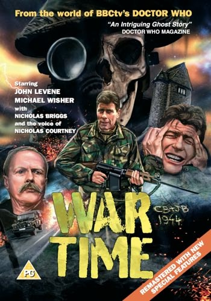 | + Original [ENG] Субтитры: Русские и Английские 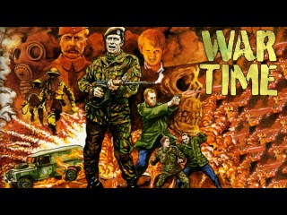 |
|---|---|---|
Shakedown: Return of the Sontarans 1 декабря 1994Связь с ДК через: Сонтаранцы, рутанцы | 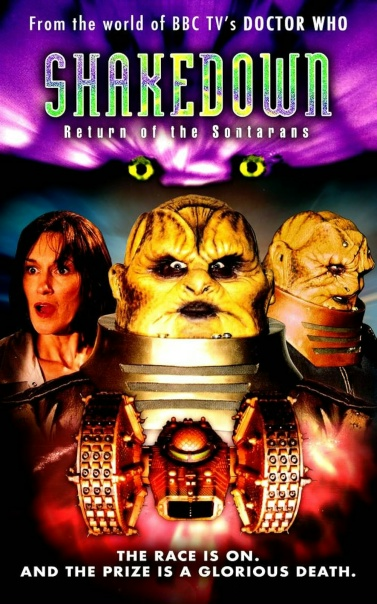 | + Original [ENG] Субтитры: Русские 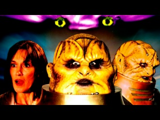 |
Downtime 2 сентября 1995Связь с ДК через: ЮНИТ, Сара Джейн-Смит, Аластер Летбридж-Стюарт, Виктория Уотерфилд, Великий разум, Робот Йети, Кейт Стюарт | 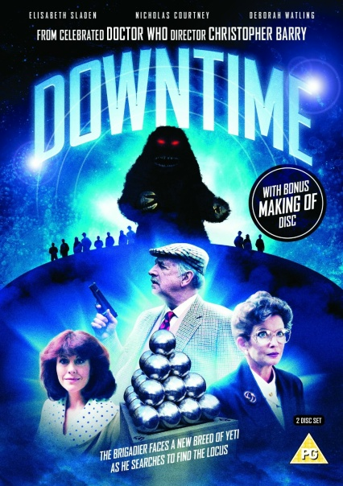 | + Original [ENG] Субтитры: Русские 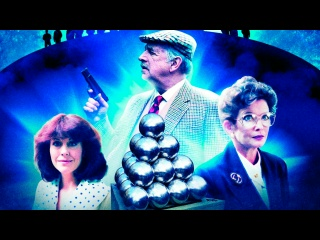 |
Mindgame / Mindgame Trilogy 1998 и 1999Связь с ДК через: Сонтаранцы, драконианцы | 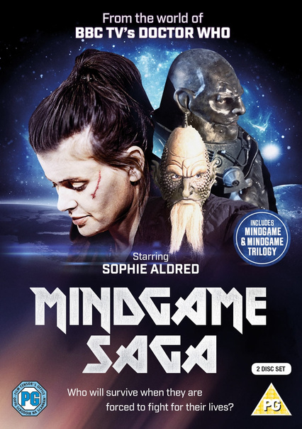 | + Original [ENG] Субтитры: Русские 1. Игры разума 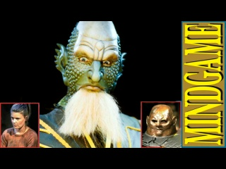 2. Трилогия игр разума: 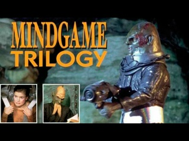 |
Dæmos Rising 14 марта 2004Связь с ДК через: ЮНИТ, Кейт Стюарт, Деймос | 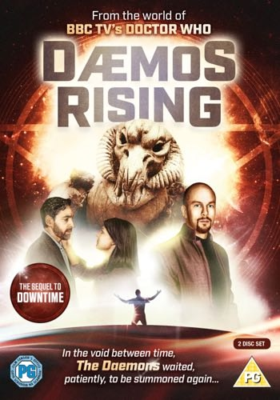 | 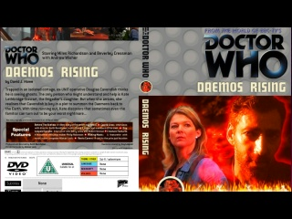 |
The White Witch of Devil's End 13 ноября 2017Связь с ДК через: Деймос, Олив Хоторн | 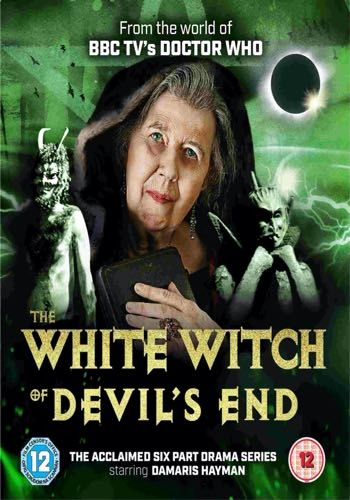 | 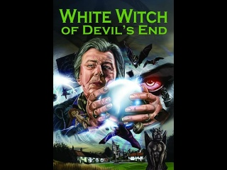 |
Sil and the Devil Seeds of Arodor 4 ноября 2019Связь с ДК через: Сил, лорд Кив | 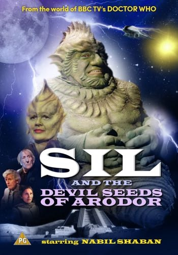 | 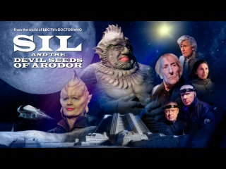 |